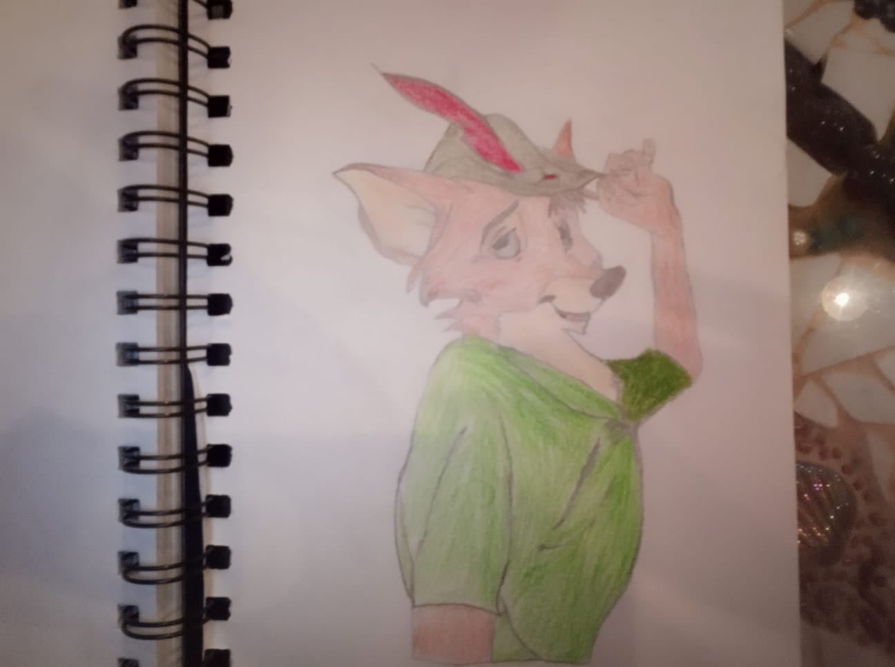

Collapsed Sidebar
Content...
My Art Website

About Me
My name is Amit Pollak.
I started my art journey when i was 20 years old.
All my life i had interest in drawing but somehow for some reason
i haven't tried until i was 20.
At certain point in my life, i started to look deeply about everything,
to examine with passion and asking questions about all the things i could.
That is a big reason why i love art.
I find that art is a way to express yourself and to show your feelings and thoughts in a creative way.
Making an art piece usually puts you in an observer perspective,
You need to look on how the thing that you are now making is shaped and what is the emotion behind it.
Understanding the lines structure, shade and light, different body movements and more.